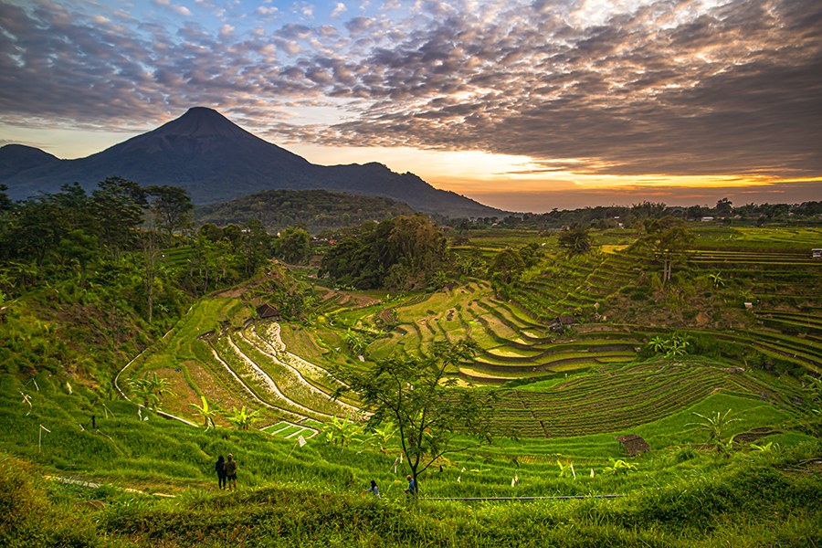
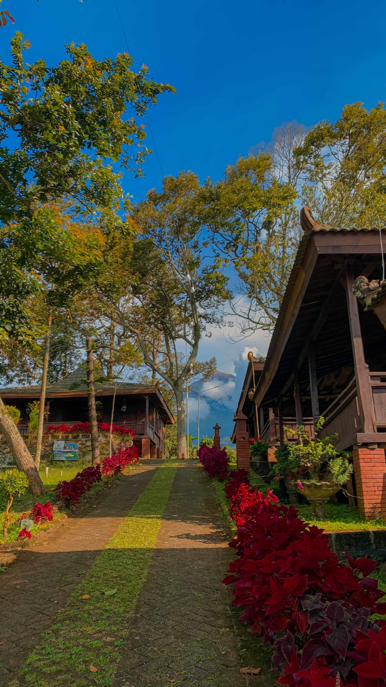
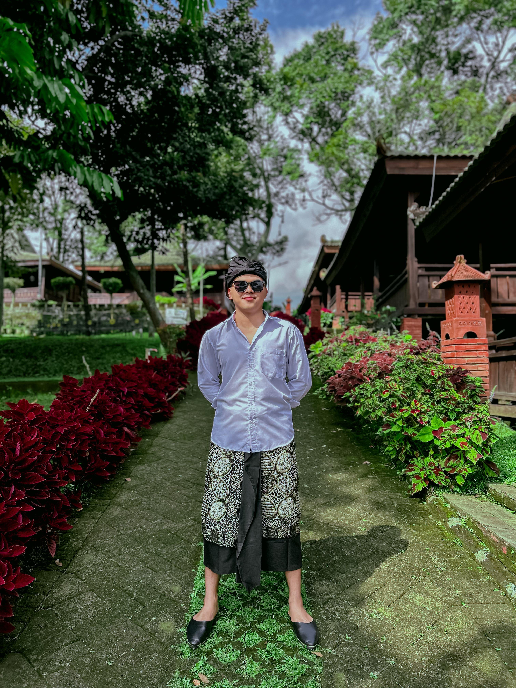
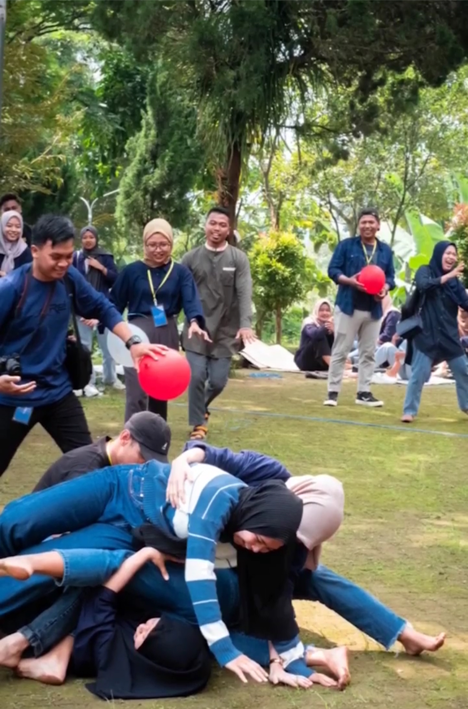

Cerita Dolanara
Di lereng Trawas yang sejuk, di antara kabut pagi dan suara alam yang lembut, lahirlah sebuah perjalanan — bukan sekadar tempat berlibur, tapi rumah bagi mereka yang ingin kembali menemukan makna “berhenti sejenak”.
Di lereng Trawas yang sejuk, di antara kabut pagi dan suara alam yang lembut, lahirlah sebuah perjalanan — bukan sekadar tempat berlibur, tapi rumah bagi mereka yang ingin kembali menemukan makna “berhenti sejenak”.
Dolanara lahir dari percakapan sederhana tentang liburan yang sesungguhnya. Bukan tentang kemewahan, melainkan tentang momen yang tumbuh dari keheningan — ketika kita menatap alam dan merasa cukup.

Kami percaya, setiap orang berhak memiliki ruang untuk beristirahat dari hiruk-pikuk dunia. Dolanara menjadi tempat di mana tawa, waktu, dan kebersamaan terasa lebih bermakna daripada sekadar tujuan wisata.

Di Dolanara, kami tidak mengubah alam — kami hidup bersamanya. Setiap langkah di tanah ini adalah rasa hormat kepada bumi, dan setiap udara yang kamu hirup adalah pengingat bahwa hidup bisa sesederhana itu.

Dolanara bukan sekadar destinasi — ia adalah perasaan. Perasaan ketika kamu sadar bahwa keindahan sejati bukan tentang tempat yang kamu datangi, tapi tentang bagaimana kamu merasakannya.
